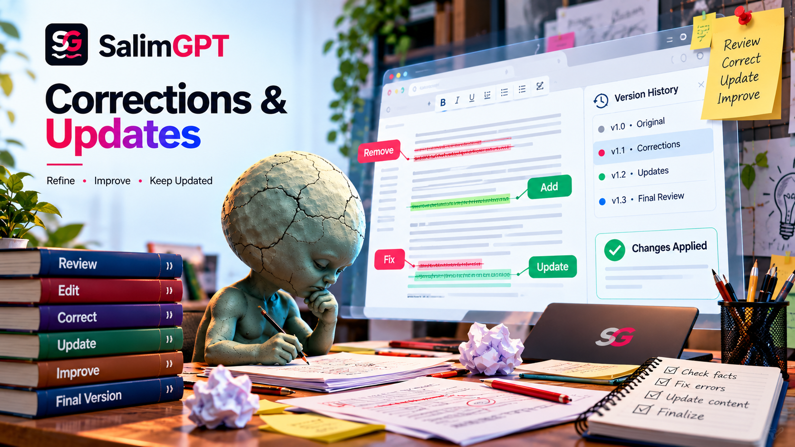

Factual Error
A name, date, place, quotation, number, event, description or other factual element is found to be incorrect.
HOW WE WORK
Publication does not end editorial responsibility. Documentary material can require review when new evidence emerges, a factual error is identified, context needs clarification, a translation changes meaning or a published element no longer reflects the best available information.
SalimGPT reviews substantive post-publication concerns through a human-led editorial process. The appropriate response depends on what changed, how significant it is and whether the issue affects the documentary’s factual meaning.

CORE PRINCIPLE
Post-publication review begins by identifying exactly what may be wrong, incomplete, outdated or misleading. The editorial response should match the nature and significance of that issue.
A minor wording problem may require a limited edit. A material factual error may require correction of the relevant passage, caption, graphic, translation or other published element. A substantial change in the evidence may require a broader update.
The goal is to restore or preserve accurate audience understanding without making changes broader than the evidence requires.
REVIEW TRIGGERS
Not every change or disagreement requires a correction. Review focuses on whether the published material contains a substantive factual, contextual, attribution, translation or presentation problem.
A name, date, place, quotation, number, event, description or other factual element is found to be incorrect.
Important context was omitted in a way that materially affects how the audience understands the published claim.
New evidence, revised data or a meaningful source update changes the factual context of the documentary.
A language adaptation changes factual meaning, attribution, certainty, chronology or terminology.
An image, graphic, map, reconstruction, caption or other visual element creates an inaccurate factual impression.
A statement is attributed incorrectly or presented as an established fact when it should remain an attributed claim.
CORRECTION OR UPDATE?
These actions can look similar from the audience’s point of view, but they address different editorial situations.
REVIEW WORKFLOW
The exact depth of review depends on the significance and complexity of the issue.
Determine which published claim, visual, caption, translation or other element is being questioned.
Return to the relevant sources and determine whether the published material accurately reflects them.
Decide whether the issue is minor, substantive or significant enough to affect the broader documentary interpretation.
Correct, clarify or update the relevant text, visual, translation, metadata or other affected material.
Confirm that the change solves the identified problem without introducing a new factual or contextual issue.
Complete human editorial review before the revised material is treated as the current published version.
MATERIALITY
The response should reflect whether a change affects only presentation or whether it changes the factual meaning of the published work.
Materiality can depend on the centrality of the claim, the scale of the error, its effect on interpretation and whether it changes the documentary’s conclusions or portrayal of a subject.
Limited presentation or wording issue without a substantive change in meaning.
Error or omission that materially affects a claim, explanation, attribution or visual interpretation.
Issue that affects multiple parts of the documentary or requires wider editorial revision.
Subject that develops over time and may require later updates as evidence changes.
MULTILINGUAL CORRECTIONS
A factual issue in one edition may also exist in another translation, while a translation-specific problem may affect only one language version.
Review therefore considers whether the change should be applied across language editions or only to the material where the issue appears.
VISUAL CORRECTIONS
A wrong caption, mislabeled map, inappropriate archival image, incorrect date or misleading reconstruction can change factual understanding even when the narration itself is accurate.
Visual correction therefore considers both the asset and the meaning created by its placement within the documentary.
AI-ASSISTED REVIEW
AI tools can assist with locating differences, comparing translations, organizing source material or identifying possible inconsistencies.
Because generated analysis can itself be wrong or incomplete, correction decisions remain based on underlying evidence and human editorial review.
REPORT A CONCERN
A useful correction request identifies the exact documentary, page, statement, timestamp, visual or translation being questioned and explains what the concern is.
Supporting sources or other verifiable information can help the editorial review focus on the disputed material.
HUMAN EDITORIAL REVIEW
Post-publication review can involve competing sources, changing evidence, disputed interpretations and questions about materiality. Those decisions require editorial judgment rather than automatic revision.
SalimGPT keeps final correction and update decisions under human editorial responsibility.
HOW WE WORK
How claims are checked against evidence before publication.
Principles guiding editorial judgment and publication.
How evidence is assessed when reviewing factual claims.
How documentary material moves through review before release.
How visual material and synthetic media are reviewed.
How SalimGPT explains editorial processes and responsibilities.